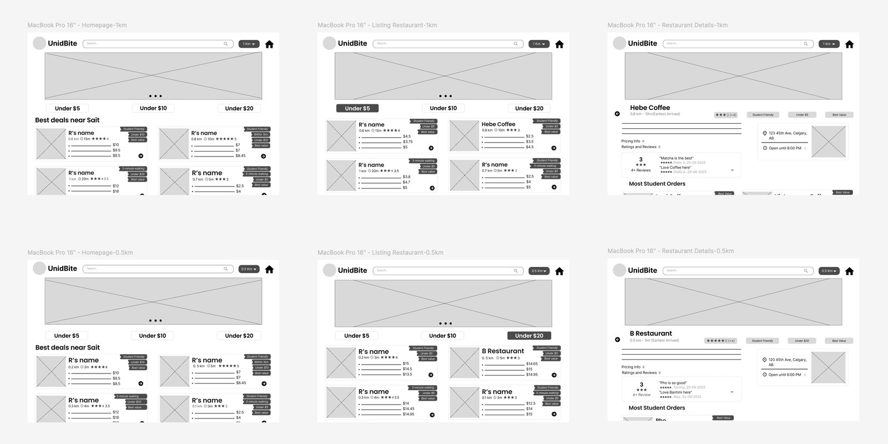
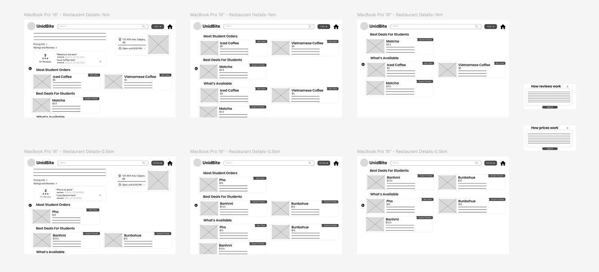

← All work

UX / UI · Brand · Content · Team of 2
Unidbite
A student-powered web app that helps SAIT students find affordable off-campus meals within one kilometre — by comparing price, quality and distance in one place.
UX / UI · Brand · Content · Team of 2
A student-powered web app that helps SAIT students find affordable off-campus meals within one kilometre — by comparing price, quality and distance in one place.
My role
Brand identity + UX content
Team
2 designers (Group 11)
Output
Clickable hi-fi prototype
Users
SAIT students
Overview
Unidbite is built by students, for students. On a two-person team I owned the brand identity (logo, colour, typography) and all written content — microcopy, body copy, content standards and tone of voice — making sure the product felt clear, trustworthy and genuinely student-first.
The problem
Information about cheap, good meals lives across online reviews, social media and word-of-mouth. With nothing in one place, students overspend and can't easily compare price, quality and distance — so they default to expensive or unreliable choices.
Approach
I shaped a brand that sounds like a helpful classmate, not a corporation — a bold purple #62109F with a bright yellow accent, set in Poppins and Inter for a clear, readable hierarchy. The content does the heavy lifting: microcopy like “Under $10”, “Within 1km” and “Best Value” surfaces affordability and trust at a glance.
Restaurant cards follow one consistent structure, and an information-standards modal makes the criteria transparent — so students can decide fast and trust what they're seeing.
#62109F#FCCC00#ED4B00Process


High-fidelity screens — consistent cards, price filters and student-focused microcopy.
In motion
Results & impact
We delivered a high-fidelity, clickable prototype with consistent desktop and mobile behaviour, plus a documented set of content standards the whole team could build on.
The result reduces decision friction, makes affordability and distance legible at a glance, and earns trust through real student reviews — positioning Unidbite as a clear, student-first product rather than another generic listings site.
Reflection
This project reinforced how much of a good interface is actually language. Tight, honest microcopy did more for trust and speed than any decoration could — a lesson I carry into every product I touch.